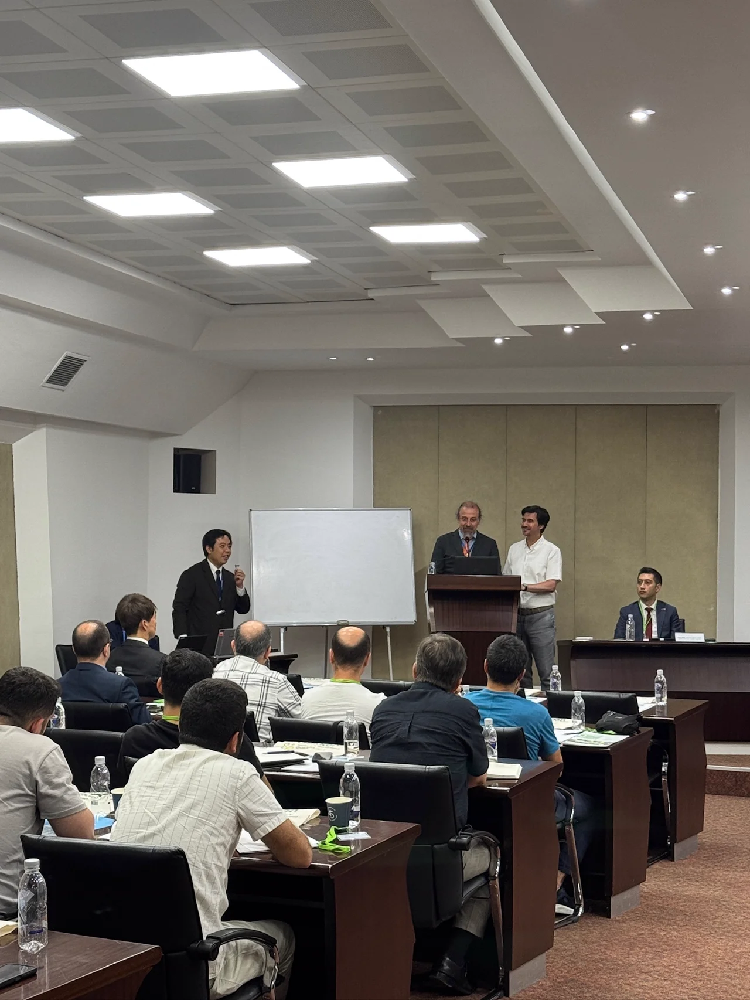
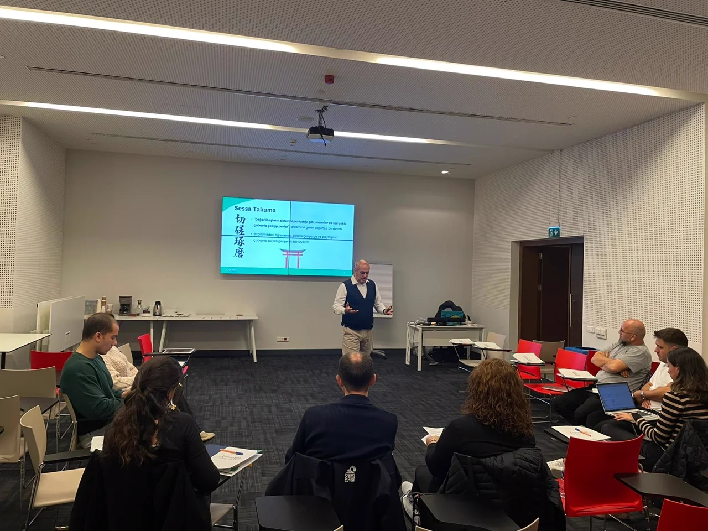
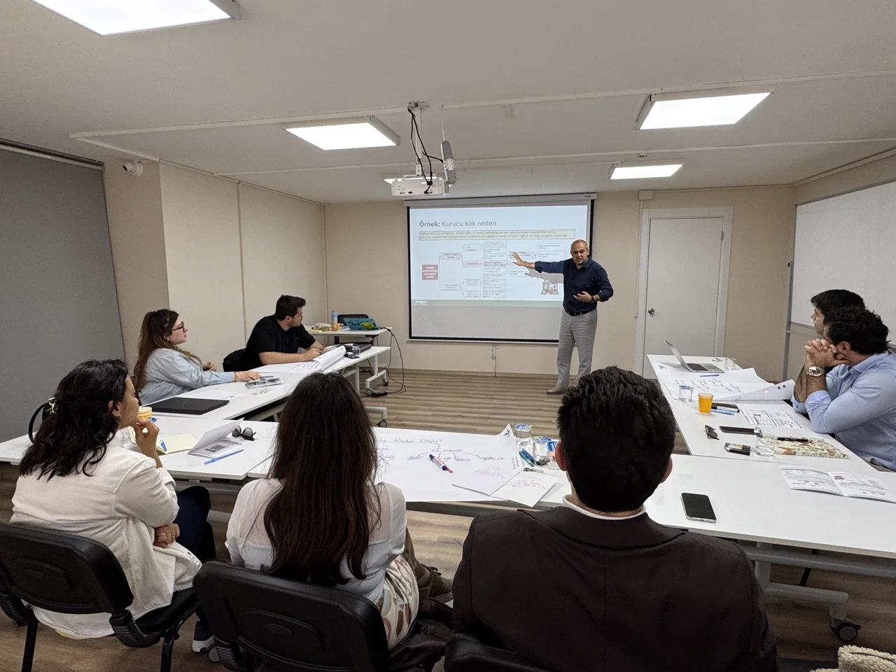
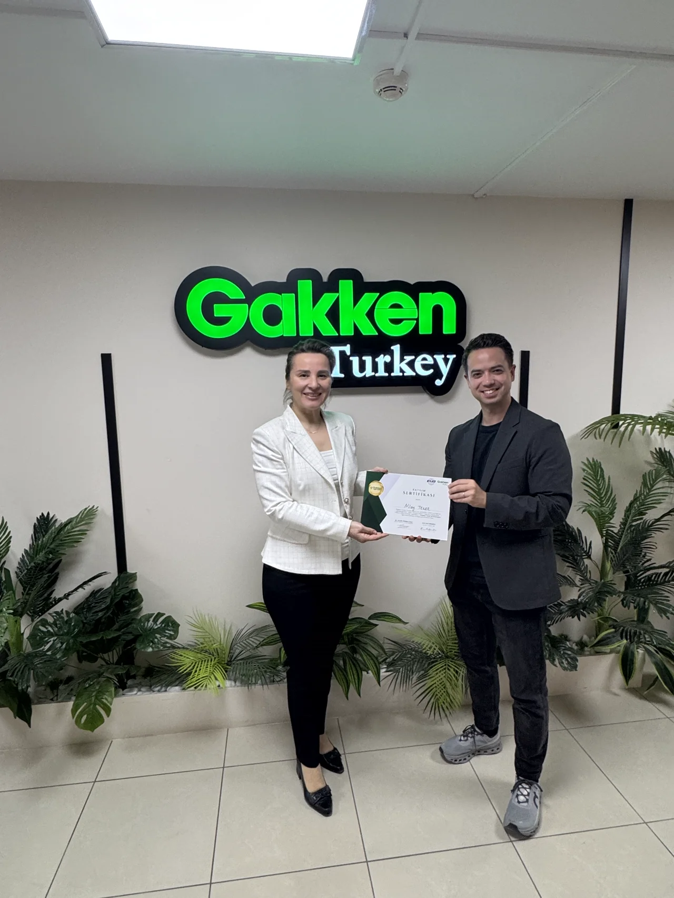
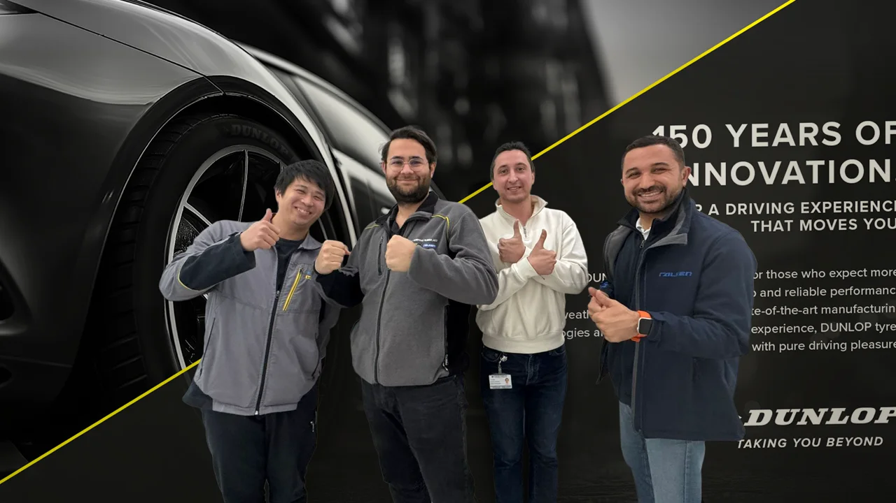
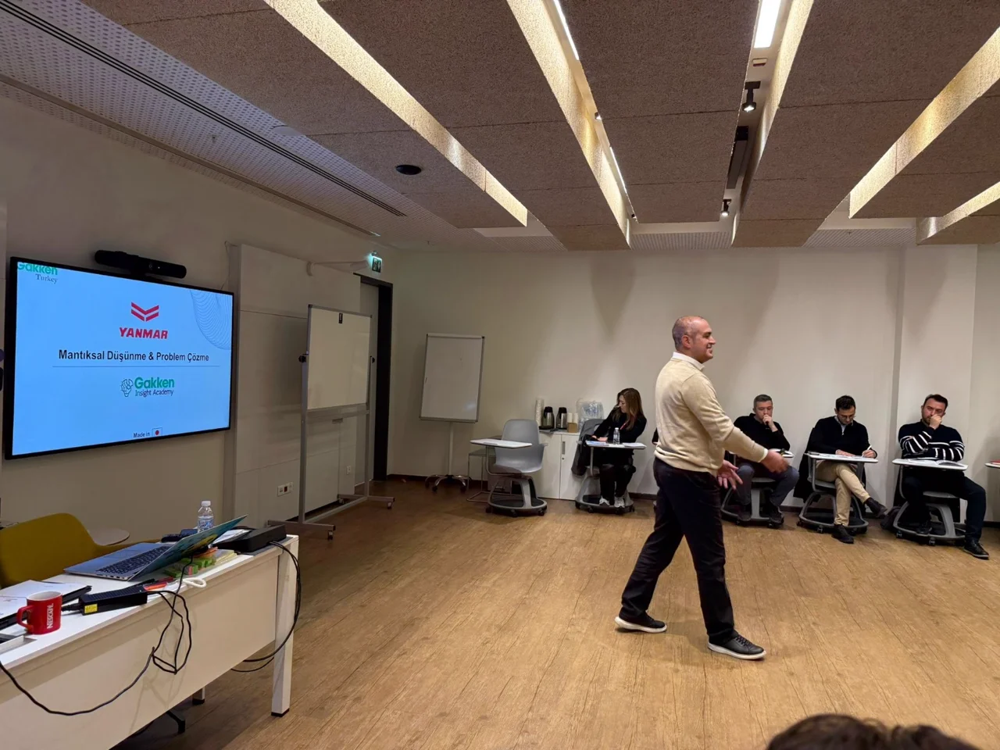
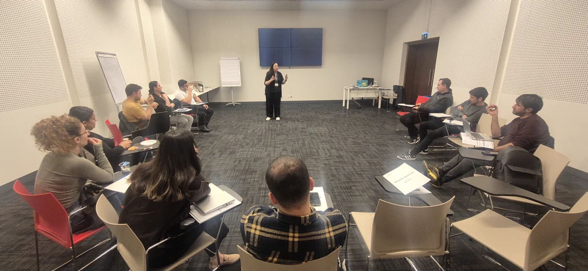
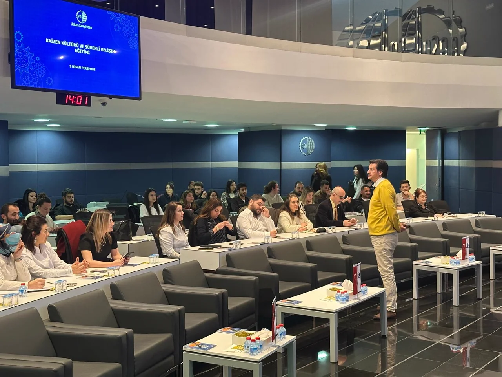
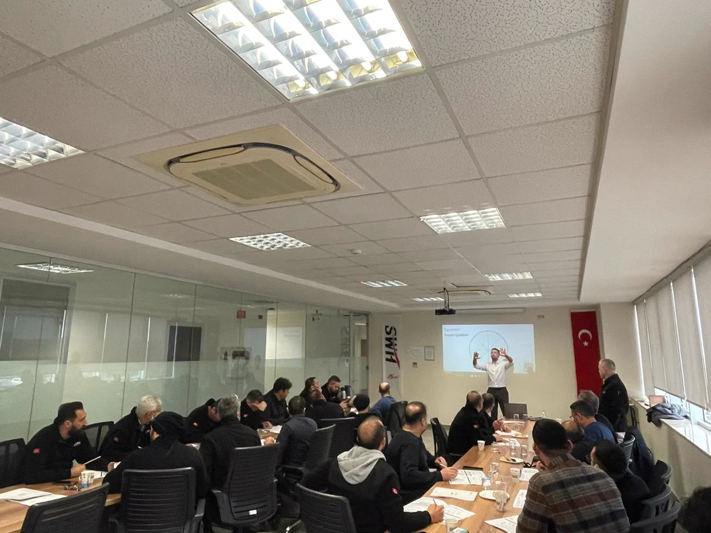
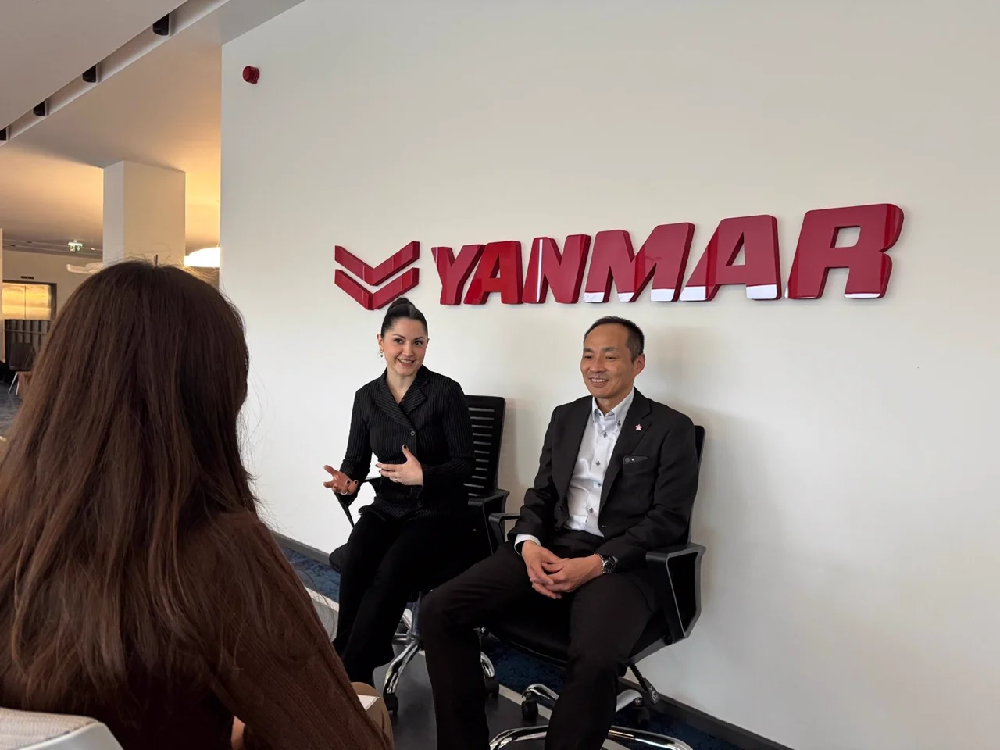

OJT — On-the-Job Training
İş başında öğrenme; kıdemlinin junior'a sistematik aktarımı. Eğitim sınıfla bitmez, günlük işin parçası olur.
Japon şirketlerinde ve global organizasyonlarda onlarca yıldır kullanılan "global standart iş düşünme becerisi" artık Türkiye'de.

Türk şirketleri hızlı hareket eder, enerjiktir, yeni projeleri hızla başlatır. Ancak organizasyon büyüdükçe çoğu şirket aynı duvarla karşılaşır: Growth Wall. Hız, ekibe değil, sisteme bağımlı hale geldiğinde gözle görülür hale gelir.
Projeler hızlı başlıyor ama tamamlanamıyor.
Toplantılar uzuyor; karar çıkmıyor.
Yöneticiler farklı yönlendirmeler veriyor.
Çalışanlar düşünmek yerine bekliyor.
Departmanlar birbirini yanlış anlıyor.
Aynı problemler tekrar tekrar yaşanıyor.
Şirket büyüdükçe organizasyon yavaşlıyor.
Bunlar yalnızca "insan problemi" değildir. Asıl sorun: Organizasyonun aynı düşünme ve çalışma biçimine sahip olmamasıdır.
Yalnızca uygulama gücü, bir organizasyonu ölçekleyemez. Organizasyonların ihtiyacı olan şey ortak bir düşünme sistemidir.
Aynı işi yapan ekipler bile farklı sonuçlar üretebilir. Çünkü problemi tanımlama yöntemi, toplantıyı yönetme şekli, karar standartları ve raporlama kalitesi kişiden kişiye değişir.
Güçlü organizasyonlar, insanlarının düşünme ve çalışma biçimini standardize eder.
Dünyanın önde gelen şirketlerinden başlayarak, yeni başlayan profesyonelden üst düzey yöneticiye kadar herkesin kullandığı ortak iş dili.
Kaynak: World Economic Forum — Future of Jobs Report 2025. Analitik ve eleştirel düşünme, 2025-2030 döneminin en hızlı yükselen iş becerileri arasında.
Bu artık opsiyonel değil.
Gakken Turkey, Japon şirketlerinde yıllar boyunca geliştirilen yönetim deneyimini temel alarak, global ölçekte geçerliliği kanıtlanmış iş yapış biçimlerini Türkiye'ye taşır. Yalnızca eğitim vermez — kurumlara global standartlarda bir gelişim sistemi kurar.
Gakken Holdings (1946)
Japon iş kültürü
17 ülke operasyonu
Çalışan

İş başında öğrenme; kıdemlinin junior'a sistematik aktarımı. Eğitim sınıfla bitmez, günlük işin parçası olur.
Herkese aynı eğitim değil. Kariyer aşamasına göre içerik: Temel · Profesyonel · Yönetim · Üst Yönetim katmanları.
Sürekli iyileştirme bir birimin değil, herkesin işi. Problem çözmek günlük işin parçası.
Aynı şekilde düşünmek, çalışmak ve iletişim kurmak. Organizasyonun "kişilere bağımlı" olmaktan çıkışı.
Türkiye'de hâlâ nadir bulunan, gerçek anlamda global standart bir program.
Programı diğerlerinden ayıran 4 unsur var.


Doğrudan iş hayatının 4 temel alanına etki eder:
Eğitim bittiğinde ölçüm bitmez:
Sadece "eğitmen" değil; sahada yıllarını vermiş profesyoneller:
Biz yalnızca insanları eğitmiyoruz. Organizasyonun nasıl düşündüğünü ortaya çıkarıyoruz.
Eğitim öncesi organizasyon davranışı
Eğitim sonrası gözlemlenen değişim
Her eğitim için ayrı katılım sertifikası verilir. Tüm pakete katılanlar 5 ayrı sertifika kazanır.

Organizasyonel performans, düşünme biçimiyle başlar.
Gakken Turkey'in Logical Thinking programı, farklı sektörlerden kurumlarda ortak düşünme sisteminin oluşmasına katkı sağladı. İşte iki canlı örnek:

Program: Mantıksal Düşünme ve Problem Çözme · 20 kişilik pilot · 11 günlük ek program
Sektör: Tarım makineleri, endüstriyel çözümler · Ana şirket: Yanmar (Japonya 1912)
"Küresel bir şirkette çalışmak; ülke ve kültür fark etmeksizin herkesin aynı düşünme, açıklama ve karar alma standartlarına sahip olmasını gerektirir."
"Problem tanımlama ve kök neden analizi süreçlerinde ortak bir dilin oluşması en büyük kazanım oldu."

Program: Koçluk + Liderlik (Genchi Genbutsu) · 2.498 çalışan
Ana şirket: Sumitomo Rubber Industries (Japonya 1909)
Great Place to Work sertifikası — ölçülebilir kazanım
"Gakken'e 'şöyle bir ihtiyacımız var, nasıl yaparız?' dediğimizde, kendileri Genchi Genbutsu yaparak sorunu yerinde anlayıp buna yönelik eğitimler geliştirebiliyor. Artık sadece 'hissedilen' değil, ölçülebilen ve yönetilebilen bir problem haline gelmişti."
Gakken Turkey Açık Oturum Programları, Japon şirketlerinin yıllar içinde geliştirdiği insan gelişim, iş disiplini ve problem çözme yaklaşımını Türkiye'deki kurumlara lokalize ederek sunan online eğitim serisidir. Bu programlar yalnızca bilgi aktaran klasik eğitimlerden farklı olarak; çalışanların iş hayatında daha net düşünmesini, daha doğru iletişim kurmasını, zamanı ve işleri daha etkili yönetmesini, ekip içinde yapıcı geri bildirim kültürü oluşturmasını ve yöneticilerin insan geliştirme becerilerini güçlendirmesini hedefler.
Türkiye'de birçok şirket genç, dinamik ve hızlı hareket eden ekiplerle büyüme potansiyeline sahiptir. Ancak şirketler büyüdükçe yalnızca uygulama hızı yeterli olmaz; toplantı yönetimi, karar alma, problem çözme, departmanlar arası iletişim, yönetici gelişimi ve iş takibi gibi alanlarda ortak bir çalışma standardına ihtiyaç duyulur. Gakken Turkey Açık Oturum Programları, kurumlara bu ortak standardı oluşturmak için pratik ve erişilebilir bir başlangıç sunar.
Tüm eğitimler 3 saatlik online webinar formatında sunulur. Program, özellikle çalışan gelişimine hızlı, pratik ve etkili bir başlangıç yapmak isteyen; ekipleri arasında ortak düşünme, iletişim ve çalışma dili oluşturmayı hedefleyen kurumlar için tasarlanmıştır.

Eğitmen: Taner Kuzu
Profesyonellerden beklenen 4 temel beceriyi yapılandırır: problemi doğru tanımlamak, sınırlı bilgiyle karar verebilmek, üst yönetime net açıklama yapmak ve tartışmaları aksiyona dönüştürmek. Sonuç ve nedenleri ayırarak düşünme + "Why / So what" derinleştirmesi.
Kim için? Genç ve orta düzey profesyoneller · Beyaz yaka · Yönetici adayları

Eğitmen: Selda Menkü
"Önce Sonuç / Conclusion First" — Japon şirketlerinin yapılandırılmış iletişim disiplini. 3 bölüm: Temel Kurallar · Düşünce ve Yapı Tasarlanması · Uygulamalı Çalışmalar. Yöneticiye, müşteriye, ekibe ve raporlamaya dönük net iletişim.
Kim için? Tüm seviyelerden profesyoneller · Müşteri iletişimi yapan ekipler · Raporlama yapan yöneticiler

Eğitmen: M. Serkut Kızanlıklı
Yöneticilerin "talimat veren" rolden "geliştiren" role geçişi. 5 bölüm: İnsan Geliştirme · Düşünmeyi Tetikleyen Sorular · Dinleme ve Farkındalık · Geri Bildirim · Günlük İşlere Entegrasyon. ICF PCC + EMCC Senior Practitioner Mentor.
Kim için? Orta-üst düzey yöneticiler · Ekip liderleri · Yönetici geliştirme adayları

Eğitmen: Bahadır Atmaca
Japon iş kültürünün omurgası: Raporlama–Bilgilendirme–Danışma. Zaman yönetimi prensipleri + önemlilik/aciliyet sınıflandırması + toplantı, raporlama ve karar zaman tasarımı + bireysel/ekip bazlı zaman yönetimi.
Kim için? Tüm seviyelerden çalışanlar · Yeni profesyoneller · Saha ve operasyon ekipleri

Eğitmen: Dr. Zeynep Altuntaş
Geri bildirimi "değerlendirme"den çıkarıp "gelişim aracı" haline getirin. Çerçeveler (durumsal/davranışsal/etkisel) · algı yönetimi · yapıcı dil · takip ritüelleri. ICF Profesyonel Koç + sosyoloji doktorası + örgütsel psikoloji.
Kim için? Ekip yöneticileri · İK / L&D liderleri · Performans yönetiminden sorumlu yöneticiler
Gakken Turkey, hızlı büyüyen şirketlerin Growth Wall'u aşarak global standart organizasyonlara dönüşmesini destekler. Şirketinizin ihtiyacına en uygun başlangıç için bilgi alın; eğitim danışmanımız sizi en kısa sürede arar.
Her webinar 20 kişi ile sınırlıdır. Tarihler netleştiğinde önceliği bilgi alan kurumlara veriyoruz.
Gakken Turkey, hızlı büyüyen şirketlerin Growth Wall'u aşarak global standart organizasyonlara dönüşmesini destekler.